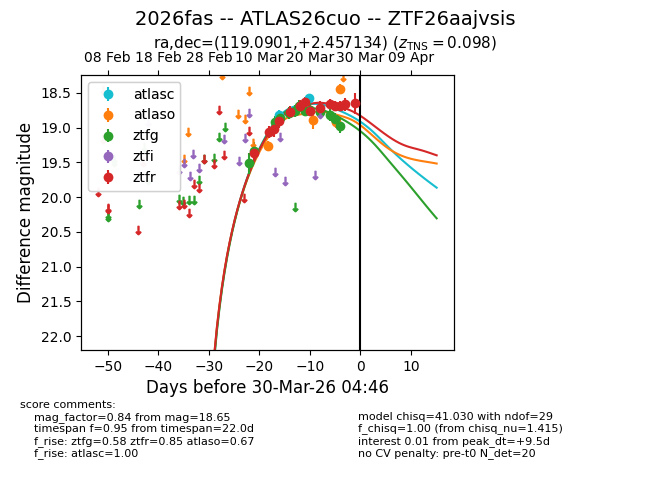
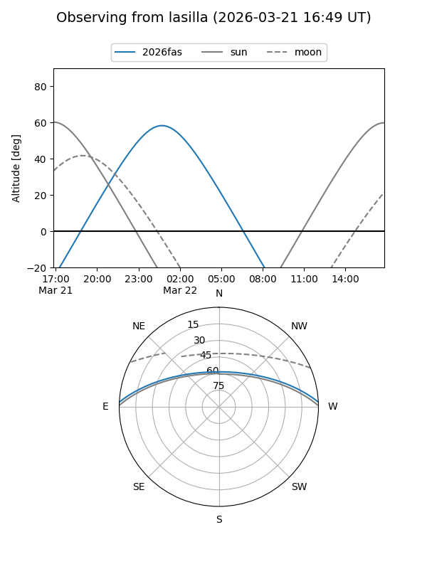
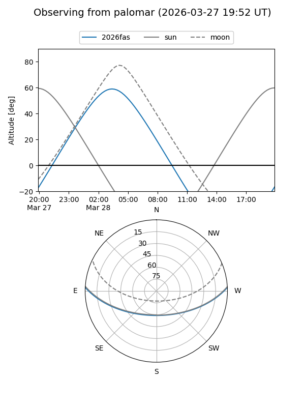
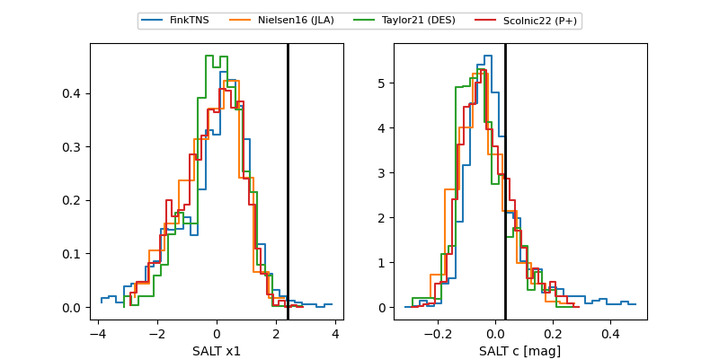

2026fas
Target 2026fas at 2026-03-30 04:49
Aliases and brokers:
FINK: link
Lasair: link
ALeRCE: link
TNS: link
YSE: link
alt names
ZTF26aajvsis (ztf,fink_ztf)
2026fas (tns,yse)
ATLAS26cuo (atlas)
Coordinates:
equatorial (ra, dec) = 119.0901,+2.45713
equatorial (HMS+DMS) = 07:56:21.62,+02:27:25.68
galactic (l, b) = (218.2431,+15.54978)
Flags:
confirmed ia
Photometry:
last atlasc=18.57, atlaso=18.44, ztfg=18.97, ztfr=18.65
2 atlasc, 4 atlaso, 13 ztfg, 14 ztfr detections
Lightcurve

Visibility


Additional plots
